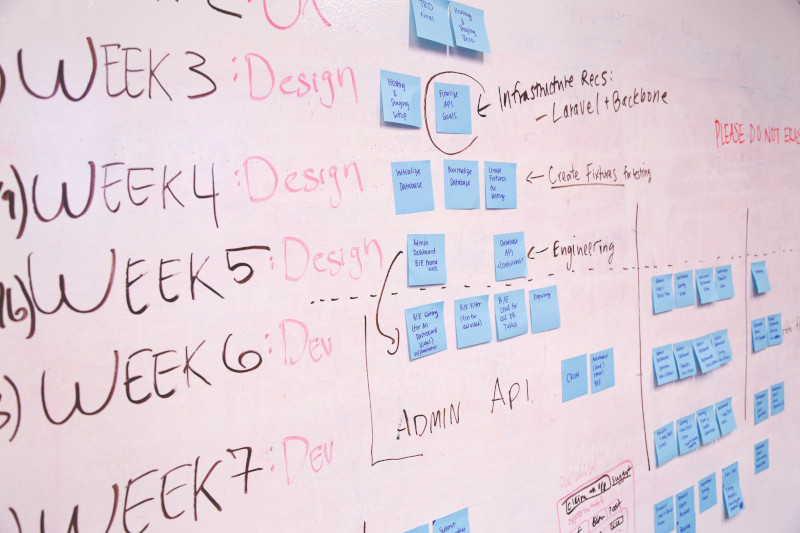

Une gestion de projet efficace a toujours été essentielle pour que les organisations restent compétitives et pertinentes pour leurs industries respectives tout en obtenant des résultats positifs. Les solutions de gestion de projet ont connu une transformation remarquable, stimulée par les percées techniques et l'évolution des exigences des entreprises axées sur les projets au fil du temps. Les outils de gestion de projet ont considérablement changé la façon dont nous planifions, exécutons et surveillons les projets aujourd'hui.

Image courtesy: Startup Stock Photos (Pexels)
Plongeons-nous dans le voyage fascinant de l'évolution des outils de gestion de projet qui ont remplacé les techniques conventionnelles du stylo et du papier par des solutions logicielles sophistiquées.
Les débuts : stylo et papier aux diagrammes de Gantt
Au début, la gestion de projet s'appuyait fortement sur des méthodes manuelles. Les chefs de projet enregistraient méticuleusement les tâches, les délais et les ressources à l'aide d'un stylo et de papier. Cependant, le besoin d'une planification et d'une allocation des ressources plus efficaces a conduit à l'introduction de diagrammes de Gantt plus efficaces. Développés par Henry Gantt au début du XXe siècle, les diagrammes de Gantt permettaient de visualiser les tâches et les éléments d'action d'un projet, de suivre leurs dépendances et de surveiller efficacement l'état des tâches attribuées aux différents membres de l'équipe. Cet outil révolutionnaire a amélioré la planification et la coordination des projets, permettant aux équipes de visualiser et de respecter les délais des projets.
L'essor des logiciels de gestion de projet
Avec l'avènement des ordinateurs dans la seconde moitié du XXe siècle, les outils de gestion de projet ont fait un bond en avant significatif. Des solutions logicielles ont émergé, offrant des fonctionnalités plus sophistiquées pour rationaliser les processus de gestion de projet. Les premiers logiciels de gestion de projet se concentraient sur l'analyse du chemin critique, ce qui permettait d'identifier la séquence des tâches dépendantes et le chemin critique du projet. Ces solutions logicielles ont automatisé des calculs complexes, permettant aux chefs de projet d'optimiser l'allocation des ressources et de minimiser les retards de projet.
Logiciel de gestion de projet aujourd'hui
Les logiciels de gestion de projet sont devenus un élément essentiel des pratiques modernes de gestion de projet. Les solutions logicielles d'aujourd'hui, comme Asana, Monday.com, Trello, CatchUp, ClickUp, Basecamp et NiftyPM, offrent un large éventail de caractéristiques et de fonctionnalités qui permettent aux équipes de projet de collaborer, de communiquer et de suivre efficacement les progrès. Les plates-formes basées sur le cloud ont gagné en popularité, offrant un accès en temps réel aux données de projet de n'importe où tout en favorisant une collaboration transparente entre les membres de l'équipe, quelle que soit leur situation géographique.
Les logiciels modernes de gestion de projet vont au-delà du suivi et de la planification des tâches. Il permet le partage de documents, le stockage de fichiers et le contrôle de version, garantissant que les membres de l'équipe ont accès aux dernières informations du projet. De plus, les outils les plus puissants offrent une interface de communication robuste ou une intégration à une interface, permettant la messagerie en temps réel et la visioconférence tout en facilitant une communication et une collaboration d'équipe efficaces.
Méthodologies agiles et outils de collaboration
L'essor des méthodologies Agiles a considérablement influencé l'évolution des outils de gestion de projet. Agile met l'accent sur le développement itératif, la planification adaptative et la collaboration continue. Les outils de collaboration, tels que les tableaux Kanban et les applications de chat d'équipe, sont devenus essentiels pour stimuler la gestion de projet Agile. Les tableaux Kanban fournissent une représentation visuelle des tâches, permettant aux équipes de suivre les progrès, d'identifier les goulots d'étranglement et de promouvoir la transparence.
Automatisation et analytique de données
L'automatisation et l'analytique des données sont devenues des fonctionnalités puissantes dans les outils de gestion de projet modernes. Les flux de travail automatisés rationalisent les tâches répétitives, réduisant les efforts manuels et les erreurs humaines. L'intégration avec des applications et des API tierces permet un échange de données transparent, améliorant l'écosystème global de gestion de projet. L'analytique des données fournit des informations précieuses sur les performances du projet, permettant aux chefs de projet de prendre des décisions basées sur les données et d'optimiser les stratégies de projet.
Apprentissage automatique et intelligence artificielle
L'intelligence artificielle (IA) et l'apprentissage automatique (ML) sont intégrés dans les solutions de gestion de projet à mesure que la technologie progresse. Les chatbots alimentés par l'IA peuvent apporter une assistance immédiate en répondant aux questions et en guidant les membres de l'équipe à travers diverses procédures de gestion de projet. Les algorithmes d'apprentissage automatique peuvent évaluer les données du projet précédent pour identifier les dangers, estimer les délais d'achèvement du projet et offrir les meilleures techniques d'allocation des ressources.
Des étapes naissantes du stylo et du papier aux solutions logicielles sophistiquées disponibles aujourd'hui, l'objectif des outils de gestion de projet a toujours été de permettre aux équipes de projet de naviguer et de mener à bien les projets les plus complexes. L'intersection de la technologie et de la gestion de projet a accru l'efficacité, la collaboration, l'automatisation et la prise de décision basée sur les données.
Au fur et à mesure que la technologie évolue, les outils de gestion de projet continueront sans aucun doute à progresser. L'avenir promet des solutions plus intelligentes et intuitives, avec une intégration plus poussée de l'IA, de l'apprentissage automatique et de l'automatisation. Les organisations peuvent s'attendre à des capacités prédictives améliorées, à des flux de travail rationalisés et à une collaboration améliorée permettant un plus grand succès grâce à une exécution efficace des projets, une meilleure utilisation des ressources et une communication et une collaboration efficaces. Adopter ces outils innovants et se tenir au courant des dernières avancées seront la clé pour prospérer dans le paysage en constante évolution de la gestion de projet.